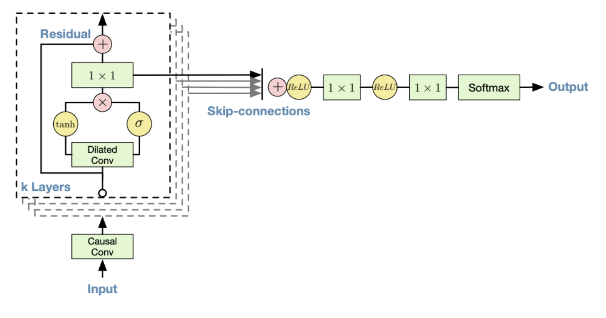
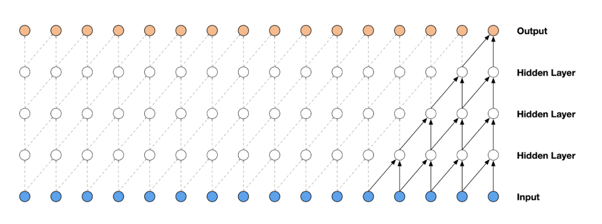
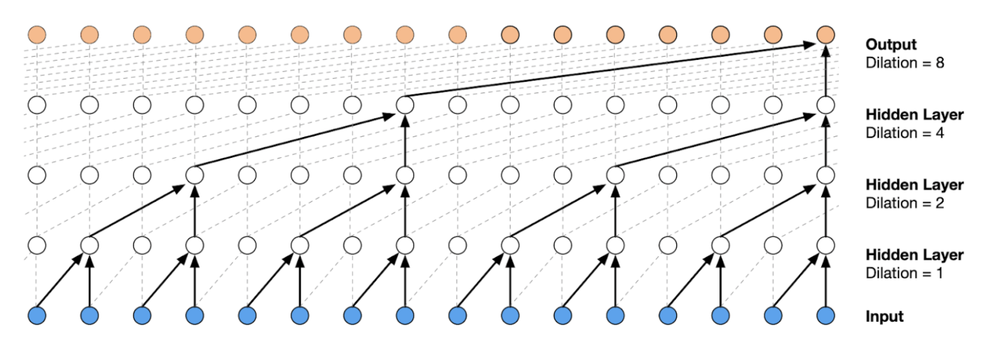
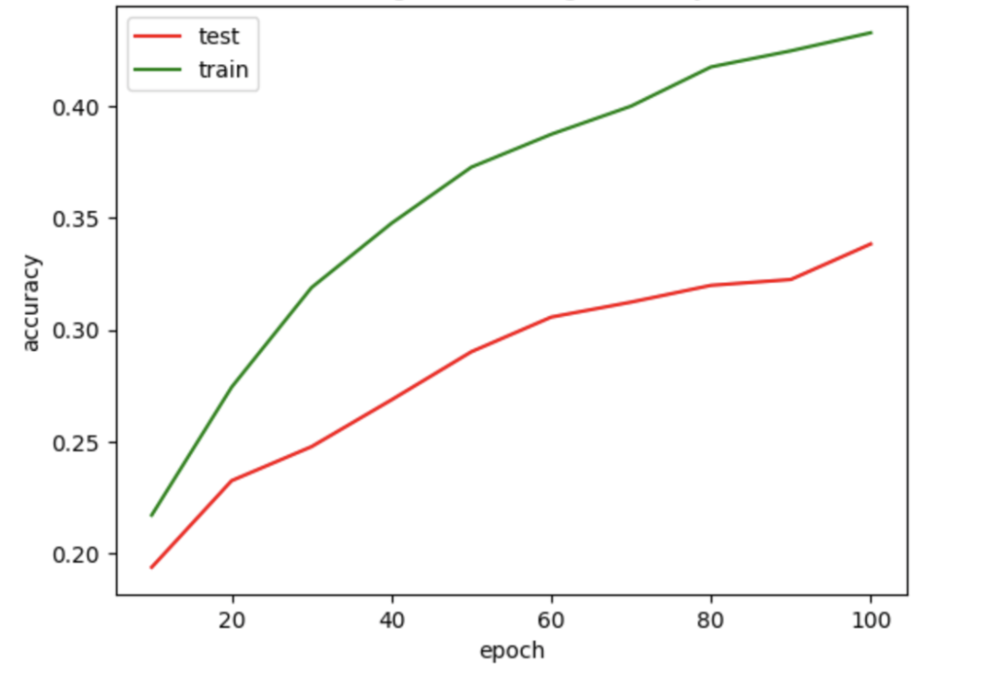
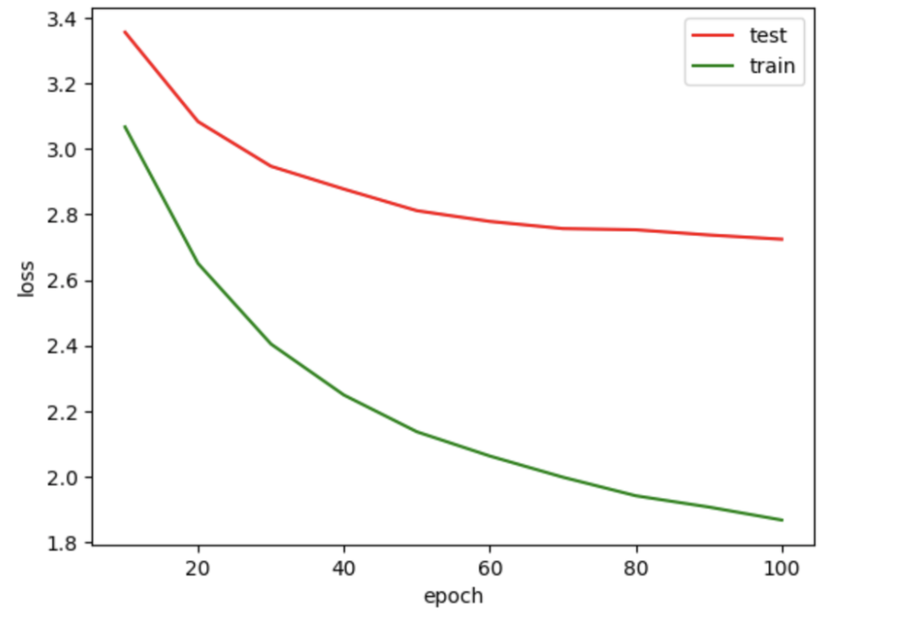

Deep learning is changing the way we listen to and create music. AI music generation is drastically increasing in popularity, with Magenta Studio, MuseTree, and Juebox as examples of some of the most popular softwares. In this project, we use deep learning to generate a ten second audio with WaveNet employing a dataset of piano songs .
WaveNet Model Architecture

Figure I. The overall architecture of the WaveNet model
Related Work
Since WaveNet was first proposed in late 2016 and has nearly six years of history, there are several papers and implementations related to WaveNet available in academic literature. This project references Oord et al (2016), which introduces the structure of the model and mentions potential applications such as text-to-speech translation and music generation. Besides the paper, the implementation of this project is based on Music Generation Using Deep Learning, which is a precise reconstruction of the original model.
Methodology
There are multiple Deep Learning-based architectures for automatically generating music. This project focuses on using WaveNet, a Deep Learning-based generative model developed by Google DeepMind for raw audio.
The training process with WaveNet is similar to that of natural language processing (NLP). In a traditional language model, the model tries to predict the next word when given a sequence of words. Similarly, in WaveNet, the model tries to predict the next sample when given a sequence of samples. In this project, the input data is multiple audio files of the same length, denoted as x1, x2, …, xt. During the training process, the model predicts x̂n based on the input data and compares the result with the ground truth xn to obtain the MSE loss.
The type of convolution layers that build up WaveNet are Causal Dilated 1-Dimensional Convolution layers. A Causal Dilated Convolution is a causal convolution where the filter is applied over an area larger than its length by skipping input values with a certain step. A dilated causal convolution effectively allows the network to have very large receptive fields with just a few layers.
Causal Convolution Layer vs. Causal Dilated Convolution Layer

Figure II. Causal Convolution Layer (above)

Figure III. Causal Dilated Convolution Layer (above)
Results
We trained with 32 time steps, 128 batch size, 100 epochs, and 20 pieces of piano music (taking approximately 100 minutes in total). At the end of the training process, the test accuracy is roughly 0.34, and the loss is roughly 2.72.
Play the audio file below to hear our final output:
Accuracy and Loss Results

Figure IV. Testing and Training Accuracy (above)

Figure V. Testing and Training Loss (above)
Conclusion
We were able to reach our target goal of generating an audio file with a training dataset consisting of twenty piano songs by Beethoven through improving the reference code by changing it to be an easy-to-use object-oriented API.
We might have been able to achieve better results if we had more time and resources. First, we could improve the loss function. Second, due to the limitations of Google Colab, we were unable to train on larger datasets or for more epochs. The original paper suggests that training on 8-10 hours of music data and 1,500 epochs might achieve ideal results .
Furthermore, we would have hoped to expand the scope of the generated music. A change that could be made would be allowing users to specify a specific genre, key, or vocal of the output audio file to be (such as keys = A minor, genre = rock & roll, vocal = soprano).
Takeaways
Ultimately, this project left us each with many important takeaways. None of our group members had ever implemented a deep learning model for a topic or application of our choice. It taught us how to search for reliable state-of-the-art research papers, understand others' implementations, brainstorm potential changes, and modify the code according to our customized needs.